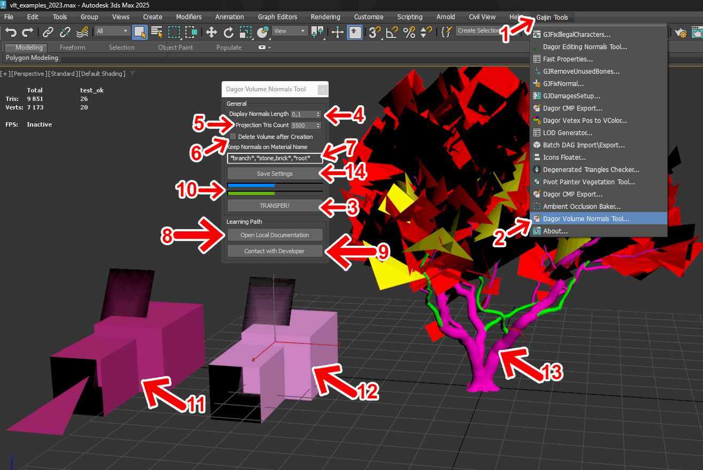
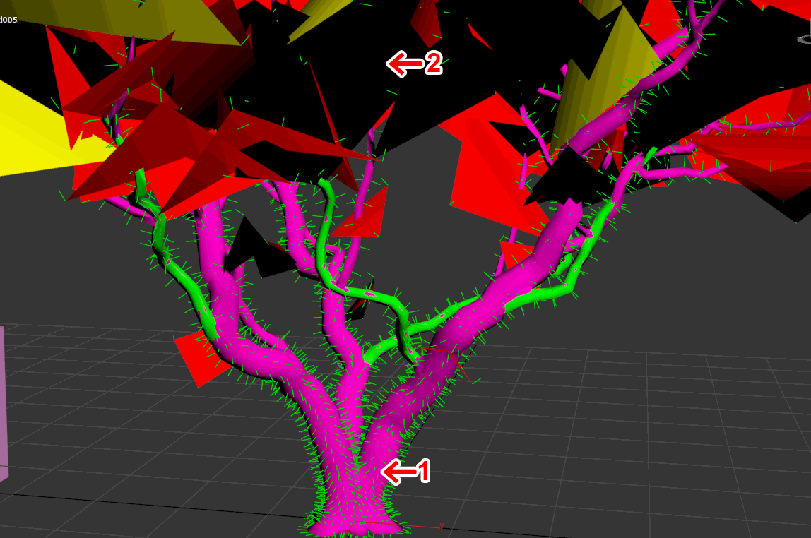
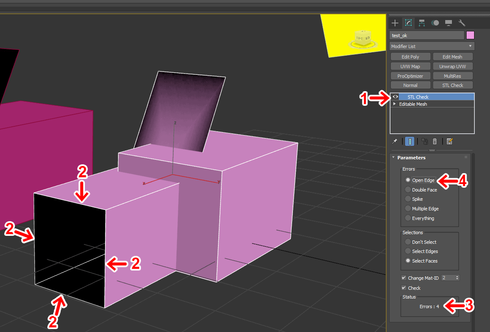
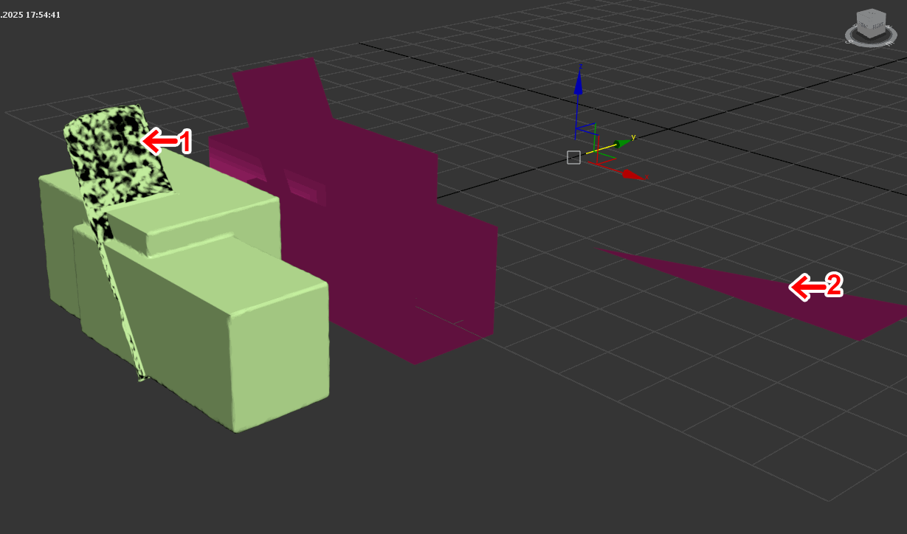

Dagor Volume Normals Tool
Installation
Install the script following the provided instructions.
3ds Max Version Requirement
This script requires 3ds Max 2025 or later.
Overview
Dagor Volume Normals Tool makes a volume mesh around a selected object. It projects normals from this volume mesh to the selected object. This smooths joints between GrowFX branches and trunks. You can also use the tool on other meshes.
Use Dagor Volume Normals Tool
Start 3ds Max.
Open a scene that contains the mesh to process.
Open the GaijinTools menu 1.
Select Dagor Volume Normals Tool… 2.
Select the target mesh 13.
Click TRANSFER! 3.


Important
The tool can take much time to run. The blue progress bar 10 shows its total progress. The Projection Tris Count value 5 affects run time. A mesh with 30,000 to 40,000 triangles can take more than one minute when this value is 25,000.
The result has smooth normal changes between branches 1. The material 2 named branch keeps its original normals. The Keep Normals on Material Name setting 7 excludes this material from processing.


Other parameters:
Display Normals Length sets the length of displayed normals in the viewport.
Projection Tris Count sets the triangle count for the volume mesh. A higher value can improve small details and can increase run time.
Delete Volume after Creation removes the volume mesh after the tool uses it. Clear this option when you must check the generated volume mesh.
Save Settings saves the current settings.
Support
Open Local Documentation opens this local page.
Contact with Developer opens the developer page.
Check the mesh with the STL Check modifier before you run the tool. Select an object with missing triangles 12.


STL Check 1 reports four errors 3. Show only open edges 4 to see the edge errors. The open edges 2 are also visible in the viewport.
Important
Correct all STL Check errors before you run the tool. Bad geometry can cause 3ds Max to stop. The tool can correct some errors, but it cannot correct every error.
Select an object with valid geometry 11 and run the tool. The tool can generate normals for this object. The original mesh still has visible errors.


The result has bad geometry near 1. It also has missing geometry at 2. Use STL Check to check the mesh before you run the tool.
Tip
If you have questions, contact the author directly at a.vlasov@gaijin.team.